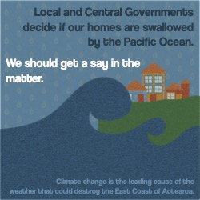

Sharing Power:
Climate Change in Aotearoa and its impact on areas of the East Coast of the North Island.
An Essay I wrote for Co-Design I, Visual below.
“The climate crisis is here and now, affecting our daily lives. We’re on the frontline.” (Warmenhoven, 2023). The catastrophic weather events that accompanied the 2022-23 summer season left Aotearoa severely impacted - and in some places, decimated. “New Zealand’s coastline is vast and many houses are built near the shore – one in seven residents, or 675,000 people, live in areas prone to flooding, while another 72,065 live in areas projected to be subject to extreme sea level rise” (Corlett, 2022). The areas first to see these disasters are some of the most delicate. Tui Warmenhoven, the chair of the board of Greenpeace Aotearoa, is also a resident of Tairāwhiti. She details just what Tairāwhiti faces with each worsening storm.
“Our location on the East Coast means Tairāwhiti will always be impacted by the increase in tropical cyclones crossing the Pacific […] The Tairāwhiti region is mostly rural, and has a majority Māori population. It’s a special part of Aotearoa famous for being the first place in the world to greet the new year. It’s also on the whole a dispersed, less well-off community facing weather events we have no control over.” (Warmenhoven, 2023).
After experiencing Cyclone Hale from the Coromandel, it became evident to me the lack of support areas of the East Coast receive despite the impact they always experience. I think it's important to elevate communities like Tairāwhiti or other areas on the East Coast, because they will continue to be damaged by increasingly-severe events such as Cyclone Hale.
Stats NZ (as cited by Corlett, 2022), details climate change’s impact on rising sea levels, and cites climate change as one of the main causes. The rapidly-warming oceans not only contribute to sea level rise, but also assist in the strengthening of storms that wreck Aotearoa. NIWA Climate Scientist Dr. Dáithí Stone explains (as cited by Morton, 2023), “while the seas around Aotearoa are still not hot enough to sustain a tropical cyclone, tropical cyclones like Gabrielle can maintain themselves much closer to us than before, and are not disrupted so much by cooler seas that are no longer there” Climate change is creating warmer seas which in turn are assisting in the sustenance of catastrophic storms.
According to Morton (2023), Tairāwhiti saw almost 560mm of rainfall in the space of a day and a half during Cyclone Gabrielle, with numbers coming close to the totals of 1988’s Cyclone Bola - renowned for being the most catastrophic cyclone Aotearoa has ever seen. Sinclair (1993) demonstrates that similarly to Cyclone Gabrielle, Cyclone Bola caused the most damage in Tairāwhiti and the surrounding areas. This poses the question of why, 35 years on from Cyclone Bola, the East Coast still experiences the same cataclysmic desecration as the 1988 event?
Through the research I’ve conducted, I’ve noticed a trend - general uncertainty towards councils throughout the country about their responses to recent weather events. RNZ reporter Matthew Rosenburg interviewed residents of areas affected by recent weather catastrophes, writing “added to the sadness of material loss, Sarah felt there had been a lack of care shown by the council [...] The council made contact for the first time three days later to yellow-sticker her house and again the following day to conduct a welfare check, which she described as a visit to make sure they were still alive” (Rosenburg, 2023).
“Hawke’s Bay Regional Council’s response and assistance to Wairoa since Cyclone Gabrielle has been labelled “pathetic” by the town’s mayor (Sharpe, 2023)”.
While the response of local councils has been approached from a ‘they did the best they could’ standpoint, could ‘the best they could’ have been better if they were more prepared in advance? Local councils on the east coast are able to acknowledge they are among the most affected areas and yet the damage caused by storms in the last year is not unlike the damage caused by storms over 3 decades ago. “While local and central governments have put money towards the recovery efforts, our elected representatives need to look at the long term solutions [...] Cyclone Hale is an example of a new norm that we don’t want” (Warmenhoven, 2023).
Along with local councils, I believe, on a larger scale, the New Zealand government is a stakeholder in this issue. Local councils can’t make the necessary changes without funding. Finance Minister Grant Robertson said “there are some difficult conversations ahead for New Zealand about exactly where we all live” (McClure, 2023). I think it’s more complex than just conversations. Professor Ilan Noy thinks (as cited by McClure, 2023) “some of those calls need to be made extremely quickly - before people start to repair and rebuild”. In times of crisis people look to the government for help. I think decisions should have been made surrounding crisis response on a scale such as this a long time ago. Climate Minister James Shaw (as cited by McClure and Graham-McClay, 2023) told parliament “We need to stop making excuses for inaction. We cannot put our heads in the sand when the beach is flooding. We must act now”.
I think that Cyclone Hale and Cyclone Gabrielle were a rude awakening for some government officials. I like to think that safe outcomes will come from the plans that are being formed following the storms, but I’m also unsure whether the suggested responses are the most positive outcome. “Managed retreat” from the homes people have lived in for generations. It’s disappointing to see that climate change has been left to get so bad that the solution is to keep moving inland - but how many times can that be done? Will we keep moving away from the shorelines until New Zealand is swallowed up by the ocean?
At this current point in time, I think elected representatives hold almost all the power surrounding cyclone response and climate change response as a whole. They have control over civil defense and funding, incredible influence over people, and the ability to make serious change. But, as described by de Silva (2023), Cyclone Gabrielle response in Tairāwhiti saw Tangata Whenua take control in fields GDC and civil defense weren’t as strong in. De Silva (2023) explained local Māori radio stations were a key part of communication strategy, and over half of the 30 welfare centres opened following the cyclone were located at marae - who have “no legal obligation to help out, but they have a tikanga duty to assist”. I think this is an important example of how communities work together, and the positive outcomes that come from it.
To achieve mitigation of this issue, or come close to it, I don’t think power has to become more balanced, necessarily. The local and national governments, as representatives of the people of Aotearoa, are responsible for creating positive change for the country. However, I think positive change won’t be achieved without actually listening to and working with communities. Government officials can’t know the true extent of the issue without actually hearing it from the community affected by it. The people of Aotearoa don’t want to be responsible for civil defense, or funding, they want to be listened to and prioritised - hence why I think power doesn’t have to be traditionally distributed much further. The east coast of New Zealand has known for years they are vulnerable - and yet no change has been made until it’s too late. It makes you wonder how different the outcome could’ve been if preventative measures had been put in place years earlier, if the government was aware of the severity of the situation, and why nothing was done. I hope prior mistakes are taken as learning opportunities, and serious changes are made - something I think needs to be done by working with communities throughout the process.
Corlett, E. (2022, 16 September). Rate of sea level rise around New Zealand doubles in past 60 years. The Guardian. https://www.theguardian.com/world/2022/sep/16/rate-of-sea-level-rise-around-new-zealand-doubles-in-past-60-years Ministry for the Environment (2022, June). Adapting to sea-level rise. https://environment.govt.nz/what-government-is-doing/areas-of-work/climate-change/adapting-to-climate-change/adapting-to-sea-level-rise/#:~:text=The%20impacts%20of%20climate%20change%20on%20our%20coast&text=increased%20frequency%2C%20duration%20and%20extent,to%20accrete%2C%20but%20more%20slowly Warmenhoven, T. (2023, 27 January). Cyclone Hale: this is what the climate crisis looks like. Greenpeace Aotearoa. https://www.greenpeace.org/aotearoa/story/cyclone-hale-this-is-what-the-climate-crisis-looks-like/ Morton, J. (2023, 15 February). Deconstructing Gabrielle: The Making of a Monster Storm. New Zealand Herald. https://www.nzherald.co.nz/nz/deconstructing-gabrielle-the-making-of-a-monster-storm/IL4BMH6BQZBB7KSDF7ZXVW5ELU/ Sinclair, M. (1993, 1 October). A Diagnostic Study of the Extratropical Precipitation Resulting from Tropical Cyclone Bola. https://doi.org/10.1175/1520-0493(1993)121<2690:ADSOTE>2.0.CO;2 Rosenberg, M. (2023, 2 March). Cyclone Gabrielle: Gisborne couple says council let their community down. Radio New Zealand. https://www.rnz.co.nz/news/ldr/485160/cyclone-gabrielle-gisborne-couple-say-council-let-their-community-down Sharpe, M. (2023, 5 April). Wairoa mayor labels regional council’s Cyclone Gabrielle response ‘pathetic’. Stuff News. https://www.stuff.co.nz/national/hawkes-bay/131701749/wairoa-mayor-labels-regional-councils-cyclone-gabrielle-response-pathetic McClure, T. (2023, 19 February). After Cyclone Gabrielle, New Zealand wonders how - and if - to rebuild. The Guardian. https://www.theguardian.com/world/2023/feb/20/after-cyclone-gabrielle-new-zealand-wonders-how-and-if-to-rebuild McClure, T. and Graham-McClay, C. (2023, 13 February). New Zealand minister decries climate crisis ‘lost decades’ in wake of Cyclone Gabrielle. The Guardian. https://www.theguardian.com/world/2023/feb/14/new-zealand-minister-delivers-furious-speech-about-lost-decades-spent-bickering-over-climate-crisis De Silva, T. (2023, February 14). In Gisborne’s blackout, the Māori response shone brightly. The Spinoff. https://thespinoff.co.nz/atea/14-02-2023/in-gisbornes-blackout-the-maori-response-shone-brightly